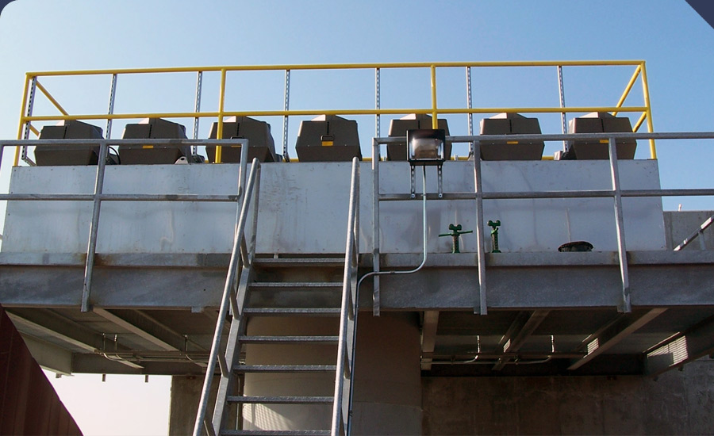
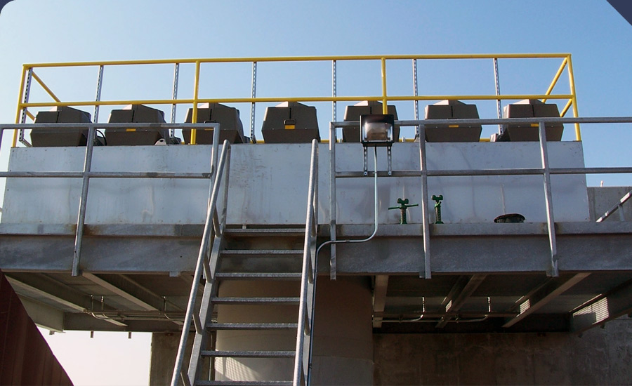
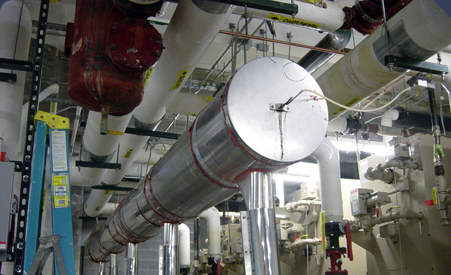
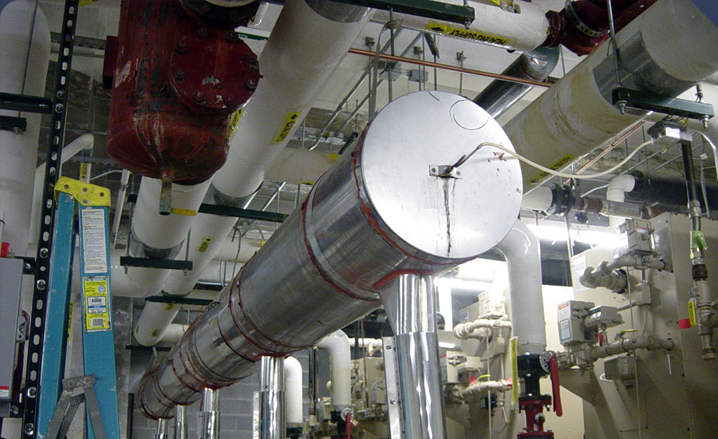

Products
Other Products
Click on the company name for further details.
- ACME
- ACME has developed a reputation as a high quality, custom manufacturer of automated scraper strainers. ACME routinely produces design-built products where other manufacturers cannot produce specific equipment for a clients needs.
http://www/acmeprod.com 
- Bock
- Bock is proud to be the leading manufacturer of water heater efficiency and performance. Quality in construction, efficiency in performance, and durability in operation—they are leaders in oil fired water heaters. It's also what goes into every product they make, whether it's an oil-fired water heater, a gas-fired water heater, an indirect coil tank water heater or a glass-lined storage tank.
http://www.bockwaterheaters.com
- Cain Industries
- Cain Industries offers an extensive selection of boiler economizers specifically designed to recover the lost Btu exiting from exhaust stacks and preheat water. Their broad line of economizers covers the spectrum of boiler sizes, ranging from very small hot water boilers with burner inputs of 200,000 Btu/hr to the large boilers delivering steam at 250,000 lb/hr.
http://www.cainind.com
- Deaerating Designs
- Deaerating Designs is a division of Precision Boiler, has a complete offering of deaerators and feedwater equipment including tray deaerators, spray deaerators, packed column deaerators, boiler feedwater systems, surge tank systems, and fuel oil pumping systems.
http://www.precisionboiler.com
- Dixie Tank
- Dixie Tank manufactures carbon and stainless steel tanks, pressure vessels, water heaters, filters, large diameter pipe and custom fabrications for the water, water treatment, hot water, and industrial markets. Dixie Tank has the capability to assist customers from the beginning design to the job completion. They specialize in ASME pressure vessels, shop fabricated storage tanks, large diameter piping and specialized skid systems. We currently hold a "U" stamp from the American Society of Mechanical Engineers (ASME) ensuring that our products can meet your most stringent requirements.
http://www.dixietank.com
- Flow Design
- Flow Design has become synonymous with automatic balancing throughout the hydronic flow control industry; recognition owed to the company’s history of engineering innovation, product enhancement, training, and strong customer relationships. Today, Flow Design is an industry leader delivering superior product performance, materials use, and manufacturing quality.
http://www.flowdesign.com
- Hays Cleveland
- Hays Cleveland has experience in the design, application and installation of a wide range of products that prove, measure and control airflow. Cleveland Controls currently offers a wide range of products designed for commercial, industrial and residential HVAC applications. We specialize in custom solutions to specific application needs. Industries served include commercial and industrial markets, federal and state institutions, utility markets, process, mechanical and automotive markets.
http://www.hayscleveland.com
- Heat Timer
- Heat Timer provides complex controls that are also simple to operate. It is important for a mechanical contractor to know that the control is reliable and is simple to install and operate. Whether your project demands a simple cycling control, or a multi- function control with BAS compatibility, Heat Timer has a product that does just that-without requiring a high level of control expertise from the operator.
http://www.heat-timer.com
- International Environmental Corporation (IEC)
- International Environmental Corporation (IEC) is the industry leader in hydronic fan coil solutions. IEC has the industry’s widest range of fan coil products containing the most popular features and the ability to customize for specific needs.
http://www.iec-okc.com
- Industrial Steam
- Industrial Steam is the leading manufacturer of .005 cc/l pressurized and atmospheric deaerators. Along with the time-tested proven Spray-type and Trya-type designs. Industrial Steam manufacturers a unique line of dual compartment systems that provide 100% guaranteed performance that is unmatched in the deaerating industry.
http://www.industrialsteam.com
- Kinetics
- Kinetics has extensive experience in designing and manufacturing innovative products to control sound and vibration. Kinetics pioneered development of pre-compressed, molded fiberglass pad isolators that would be incorporated into an innovative new floor isolation system.
http://www.kineticsnoise.com
- Marlo’s
- Marlo’s reverse osmosis and water softeners lines offer sound solutions to water treatment problems in markets ranging from light commercial to heavy industrial installations and accomplished using either our standard constructed equipment or specially engineered to comply with detailed customer specifications.
http://www.marlo-inc.com
- Niagara’s
- Niagara’s Wet Surface Air Cooling systems are the straight path to optimum condensing of turbine steam. As a single-stage system, they are more efficient and economical than the multi-stage, cooling tower/surface condenser approach. Competitive first cost, lower parasitic energy, conservative ratings assure long-term performance, completely fireproof construction, safest winter operation, simplified maintenance and water treatment, inherent plume abatement capability, single-source thermal responsibility.
http://www.niagarablower.com
- Polaris
- Polaris plate heat exchangers bring maximum effectiveness and efficiency to an array of challenging heat-exchange applications—from HVAC specialties to industrial needs to the special demands of chemical and pharmaceutical manufacturers and food processors.
http://www.polarisphe.com
- Sondex
- Sondex specializes in the developing and manufacturing of Gasketed Plate Heat Exchangers, Semi-Welded Plate Heat Exchangers, Free Flow Plate Heat Exchangers and Brazed Plate Heat Exchangers into a variety of markets including commercial, industrial, food, dairy, hygienic, refrigeration, utility, ethanol, chemical and marine applications.
http://www.sondex.com
- Sun Span
- Sun Span Gas Infra-red Heaters are one of the industries leaders in innovation, performance, reliability and energy savings. Architects, engineers, HVAC contractors and commercial and industrial building owners trust SunSpan heaters for their new construction as well as building renovations. SunSpan Gas Infra-red Burners are the choice for cooking, commercial, and industrial applications throughout the world.
http://www.sunspanheaters.com
- Twin City
- Twin City has been making connectors, expansion joints, flexible metal hose and custom products for nearly 30 years. Twin City has built a reputation on quality, reliability, and fast response. Their sales team has nearly 100 years of combined experience. They test 100% of their product in the factory so you can install them with confidence.
http://www.twincityhose.com
- Urecon
- Urecon U.I.P.&Reg; processed pipe is insulated with rigid polyurethane foam, the best insulation commercially available on the market today. Urecon's patented insulation process ensures a homogenous, void free layer of rigid polyurethane foam insulation, bonded directly to the entire pipe surface. Our insulation system may be applied to virtually any type of core pipe on the market today, from 13 mm (½ in) to 1100 mm (42 in) in diameter, with or without electric tracing conduit.
http://www.urecon.com

 



 
